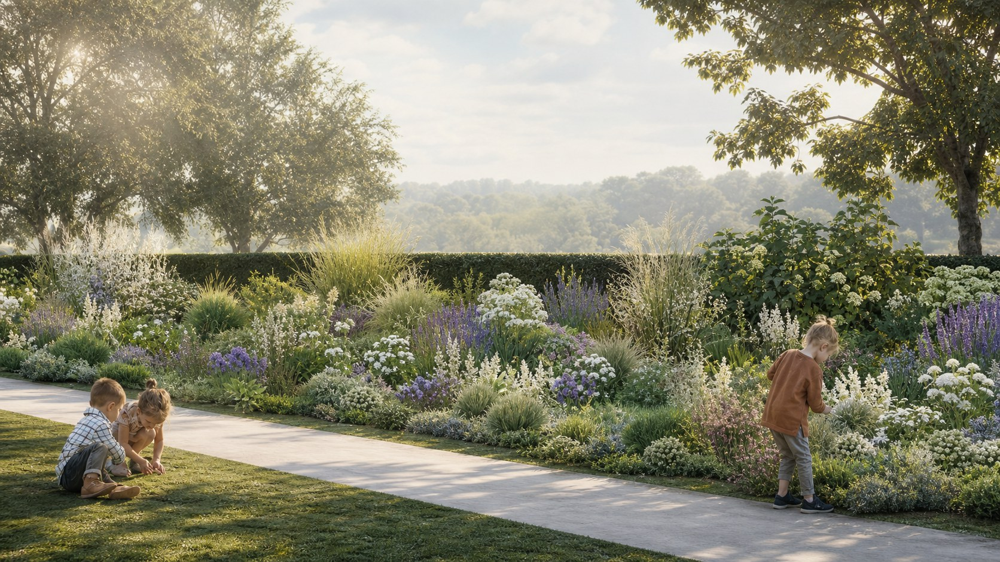
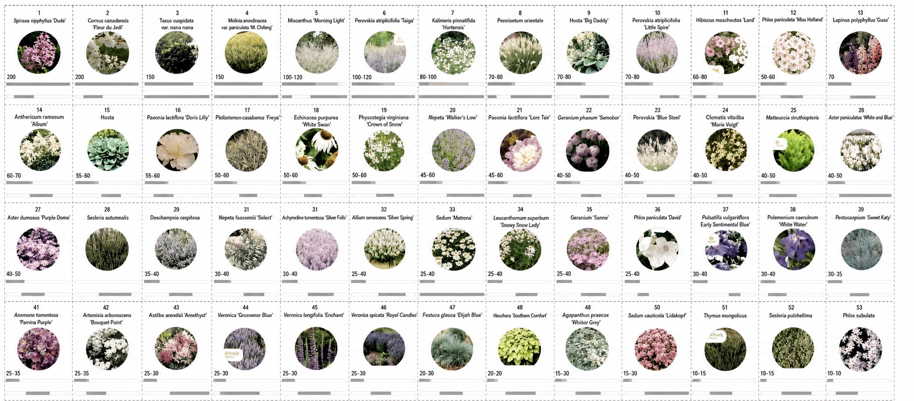
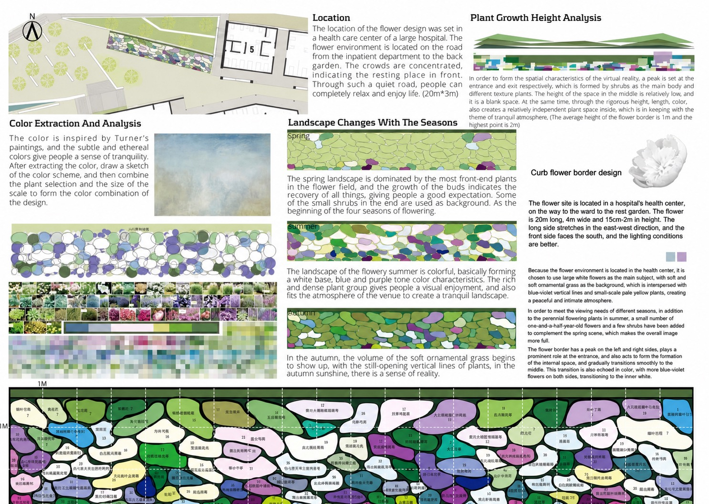
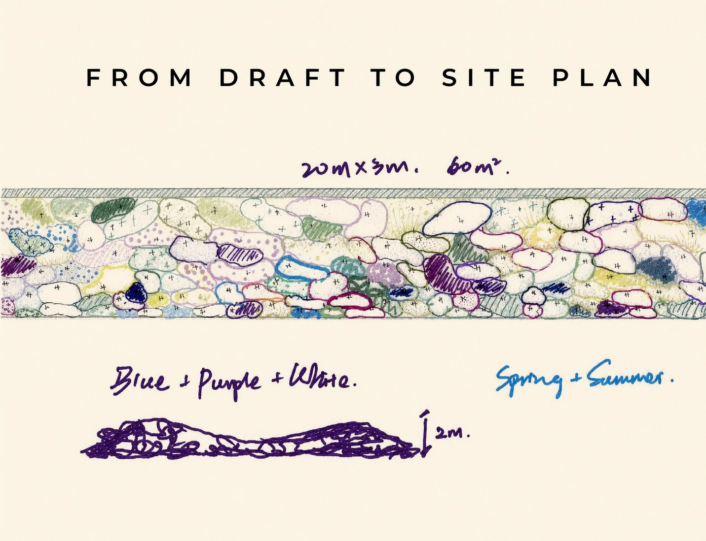

Colour Translation
Extracting blue, purple, white, and soft green tones from painting studies into a planting palette.
Planting design / Healing garden / Competition

Blue Season is an individual competition project awarded First Prize in the Beijing Yicai Plant Design Competition in 2018. The proposal develops a 60-square-metre flower border for a hospital healing garden in Beijing, creating a calm roadside planting environment for patients, visitors, and daily caregivers.
The design takes its blue, purple, and white palette from the soft atmosphere of Turner-inspired colour studies, then translates the extracted colour scheme into plant selection, height analysis, seasonal rhythm, and a layered perennial planting composition for spring and summer.
Extracting blue, purple, white, and soft green tones from painting studies into a planting palette.
Arranging bloom time and foliage structure so the border changes gradually across spring, summer, and autumn.
Balancing grasses, perennials, and structural plants through height, density, and movement.
Designing close-up experiences for walking, resting, observing, and quiet recovery.


